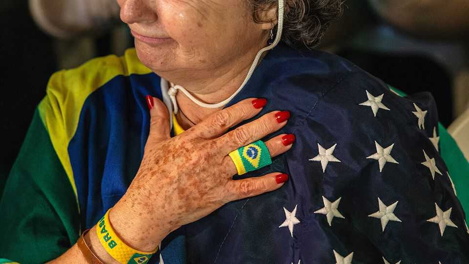
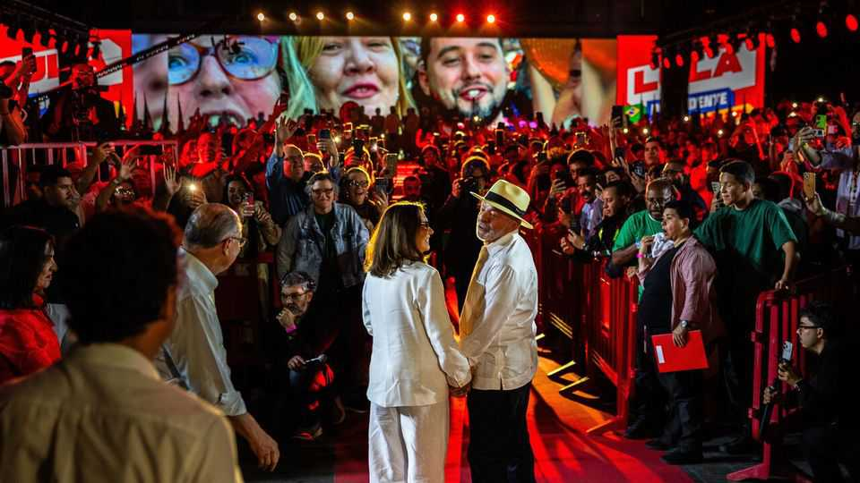

Amid foreign interference, Brazil’s election kicks off with a whimper
Voters are disillusioned with the apparent choice between Lula and the son of a jailed former president

Aug 6th 2026
Campaigning for Brazil’s general election in October does not formally start until August 16th, but already the race is testy. Donald Trump has slapped new, exorbitant tariffs on Brazil, his motivation seemingly more to do with politics than trade. Brazil’s government denied visas to two officials from the US State Department, claiming they planned to cast doubt on the integrity of the country’s electronic-voting system. On July 25th Argentina’s president, Javier Milei, travelled to São Paulo and gave a speech in which he referred to Brazil’s president, Luiz Inácio Lula da Silva, as a “convict” and “thief”. And on August 4th the Trump administration revoked the visa of Brazil’s ambassador to the United States.
For all this fuss with foreigners, the mood among Brazilians is one of disillusion. Voters appear unenthusiastic about the choices on offer. Leading the race is the 80-year-old incumbent, known as Lula, making his seventh run for the presidency. His main challenger is Flávio Bolsonaro, the eldest son of Jair Bolsonaro, a populist former president serving a 27-year sentence for attempting a coup after losing the most recent election, in 2022. A slew of other right-wing candidates poll in single digits. Whoever wins will lead a divided country. Around half of Brazilians say they would never vote for Lula, and a similar share would never vote for Flávio.
As well as their next president, Brazilians will pick governors for all 27 states, two-thirds of the Senate and every member of the lower house. The next president will have a chance to nominate four of the 11 justices who sit on Brazil’s Supreme Court, a powerful institution that often intervenes in politics. If no presidential candidate wins more than half the votes on October 4th, a run-off will be held on October 25th.
Since Mr Trump returned to the White House in January 2025 right-wing lookalikes have won all seven presidential elections in Latin America. Mr Trump has interfered in several of them, publicly backing his preferred right-wing candidates. This has transformed Lula’s campaign. At his Workers’ Party convention on August 2nd, party leader Edinho Silva made it clear what the line would be: “We must choose between a Brazil of authoritarianism...that sells itself out...and a sovereign Brazil that defends our interests.”
It is easy to imagine Mr Trump trying to sway Brazil’s ballot. Last year when Mr Bolsonaro—who fancied himself “the Trump of the Tropics”—was put on trial, Mr Trump’s government placed sanctions on the Supreme Court justice in charge of the proceedings and cancelled visas for eight judges on the bench. Mr Bolsonaro’s allies were left alone.

But foreign right-wingers seem to be the only ones Flávio can count on. At the convention in São Paulo that launched his candidacy on July 25th, Brazil’s other right-leaning parties were notably absent. Instead, he was backed by Mr Milei and the insults he hurled at Lula. Israel’s Binyamin Netanyahu, another Trump ally, offered a pre-recorded message.
Flávio’s campaign took a mighty blow in May, when recordings leaked in which he can be heard asking for money from Daniel Vorcaro, the disgraced banker at the heart of Brazil’s largest-ever bank fraud. Flávio wanted the money for an English-language film about his father, “Dark Horse”, which is due to be released in September. The leaks caught Flávio in a lie, after he previously denied having a relationship with Mr Vorcaro. Flávio’s approval ratings plummeted.
A public spat with his stepmother, Michelle, who is adored by Brazil’s powerful evangelical Christians, has also hurt. After the tiff, a close ally of the Bolsonaro family told a podcaster: “Statistically speaking, women tend to vote very badly, especially single women.” Among Brazil’s women, Lula leads Flávio by 18 percentage points.
Centre-right parties dominate Congress. Their refusal to back Flávio may well be down to a calculation that Lula will be re-elected. His approval rating is high, between 43% and 48% in recent surveys, levels at which incumbents can expect to win.
Yet there could still be an upset. Lula’s lead in voting intentions is slim. Voters’ top concerns are corruption and crime, and Lula is seen as weak on both. He served 19 months in prison for corruption before his conviction was overturned on a technicality in 2021. Many voters have never forgiven him. Flávio has recovered ground in recent weeks as Lula’s political allies and his son have been caught up in corruption scandals. And even though reports of violent crime are falling, voters seem to think security is deteriorating. In an Ipsos poll published in June, 47% of Brazilians cited violence as the country’s main problem, up seven points from last year.
Disillusionment could help Renan Santos, a former entrepreneur and political outsider. He rose to prominence in 2016 as the organiser of protests that led to the impeachment of Dilma Rousseff, Lula’s protégée. Mr Santos criticises both Flávio and Lula in slick videos posted to millions of followers on Instagram and TikTok. He may attract fed-up voters.
Mr Santos says he is liberal on economics but a social conservative. He models himself on Mr Milei, as well as Nayib Bukele, El Salvador’s autocrat, who has dramatically improved security in his country by adopting hardline tactics. One of Mr Santos’s slogans, “Catch, Kill”, refers to what he would allow police to do to alleged criminals. He says he wants to turn the country’s presidential palace into “a startup” for policy ideas. Though he remains relatively little-known, upcoming television debates may change that. The presence of a firebrand outsider should worry Flávio’s camp. And maybe even Lula’s. ■